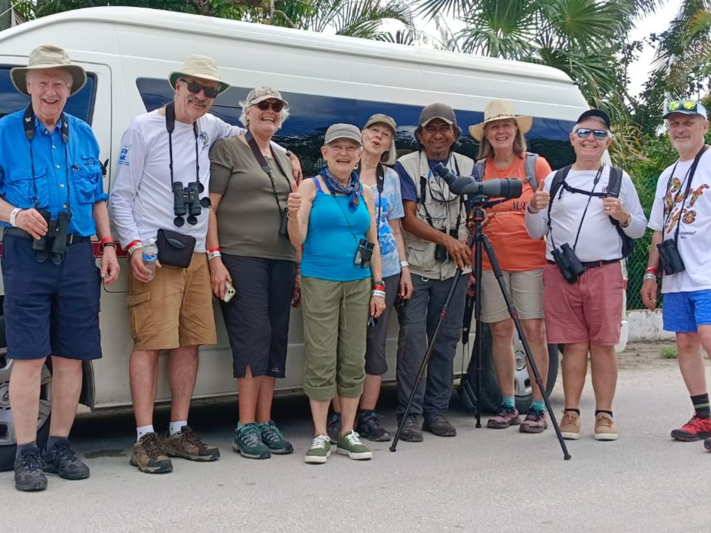
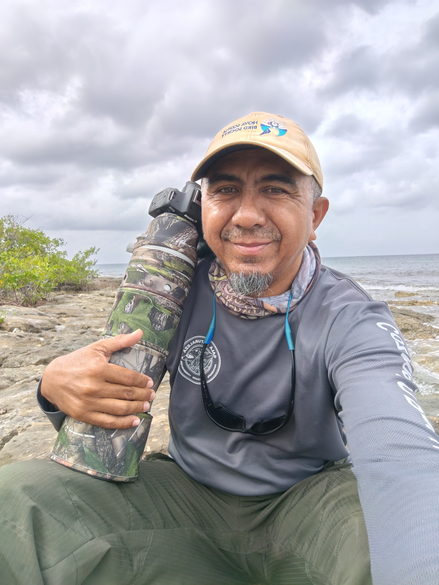
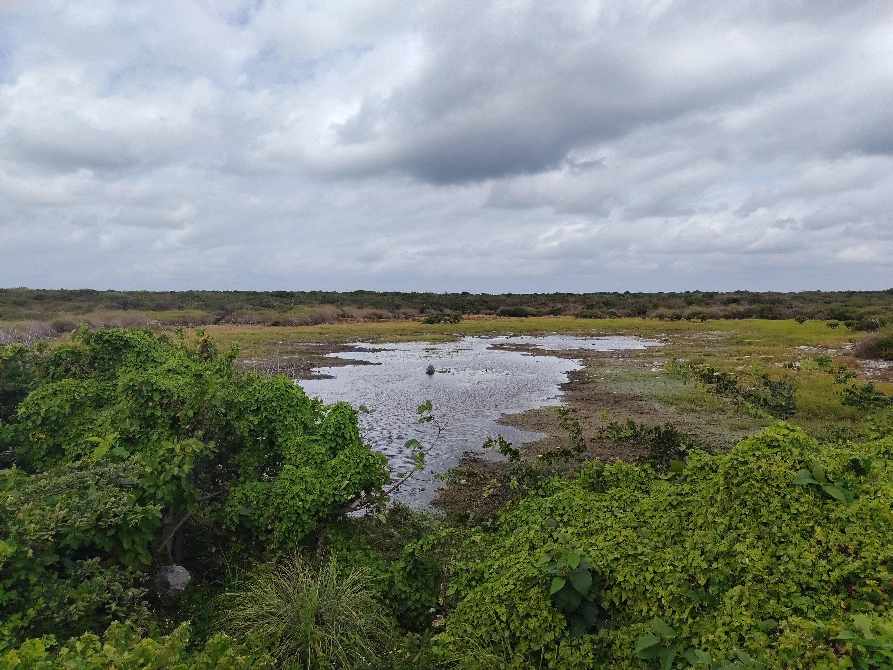
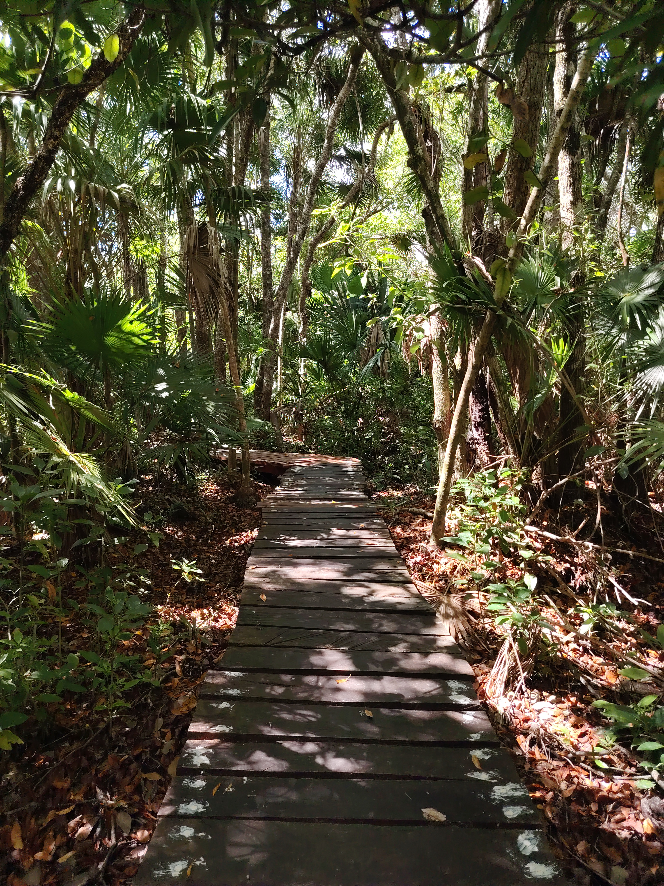
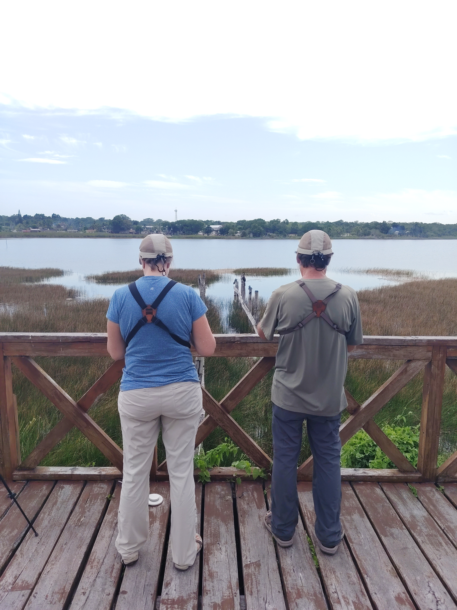

Avistamiento de Aves · Naturaleza · Vida Silvestre
Descubre el Lado Más Salvaje de México
Explora aves, paisajes y vida silvestre junto a un guía de naturaleza que conoce el territorio y sabe dónde mirar, qué escuchar y qué descubrir.
Reservar Tour →00 — Bienvenidos
Cozumel, la Península de Yucatán y Chiapas: aventuras de avistamiento de aves con Elvis.
Donde cada recorrido es una oportunidad para mirar la naturaleza de otra manera.
En Gala Naturaleza guiamos experiencias de avistamiento de aves y vida silvestre en Cozumel, la Península de Yucatán y Chiapas. Cada recorrido nace del conocimiento profundo del territorio y de una pasión genuina por observar la naturaleza con atención, paciencia y respeto.
Exploramos selvas, costas, manglares y otros paisajes en busca de especies endémicas, residentes y migratorias, adaptando cada salida al ritmo, experiencia e intereses de quienes nos acompañan. Combinamos guía de campo y fotografía de naturaleza para que cada encuentro sea también una oportunidad de aprender, descubrir y mirar de otra manera.
Más que observar aves, queremos ayudarte a conectar con el lugar que las hace posibles.

La Persona Detrás de la Experiencia
«Sabe dónde mirar, qué escuchar y cómo acercarte a la naturaleza.»

Elvis Jiménez
Guía de Naturaleza · Observador de Aves · Fotógrafo de Vida SilvestreElvis Jiménez es guía de naturaleza, observador de aves y fotógrafo de vida silvestre. Su pasión lo ha llevado a explorar los diversos ecosistemas de Cozumel, Yucatán y Chiapas, desarrollando un profundo conocimiento de sus aves y fauna.
Con una mirada experta y cercana, Elvis convierte cada recorrido en una oportunidad auténtica para descubrir la naturaleza.
Especies y Hábitats
Aves y Naturaleza
Desde los manglares y humedales de la costa hasta la selva tropical y los arrecifes del Caribe, México reúne una extraordinaria diversidad de ecosistemas y especies. En Gala Naturaleza exploramos estos paisajes con especial atención a las aves, las especies endémicas y la vida silvestre, siempre desde una mirada respetuosa hacia la naturaleza que los hace posibles.



Por Qué Gala Naturaleza
Aprende a Ver la Naturaleza de Otra Manera
Una buena experiencia de birding no consiste solamente en contar especies. Se trata de aprender a observar, escuchar y comprender lo que ocurre a tu alrededor.
Oír lo que Otros no Escuchan
Elvis tiene una habilidad excepcional para localizar e identificar aves por sus cantos y llamados, incluso cuando permanecen ocultas entre la vegetación.
Más que Aves
Cada recorrido es una oportunidad para descubrir el comportamiento, los hábitats y la historia natural de las especies — y también encontrar reptiles, insectos y otros habitantes del ecosistema.
La Experiencia se Adapta a Ti
No importa si es tu primera vez observando aves o si ya tienes una lista de lifers. El recorrido se adapta a tu ritmo, tus intereses y lo que quieres descubrir.
Lo Que Dicen
Reviews from Tripadvisor
62 opiniones en Tripadvisor · Calificación 5.0
★★★★★
"Elvis era increíble y nos enseñó muchísimo."
★★★★★
"Un tour excepcional — Elvis es conocedor y apasionado."
★★★★★
"Elvis fue un guía maravilloso — lo más destacado de nuestro viaje."
Gala Naturaleza
Accesorios

Gorra de Campo
¿Te interesa un accesorio? Envíanos un mensaje y nos pondremos en contacto.

Playera
¿Ya tienes un tour reservado? Podemos coordinar la entrega durante tu tour.